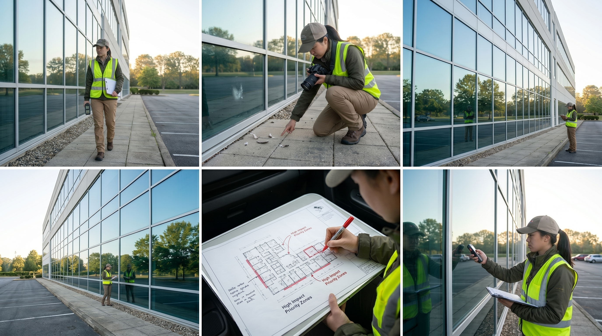
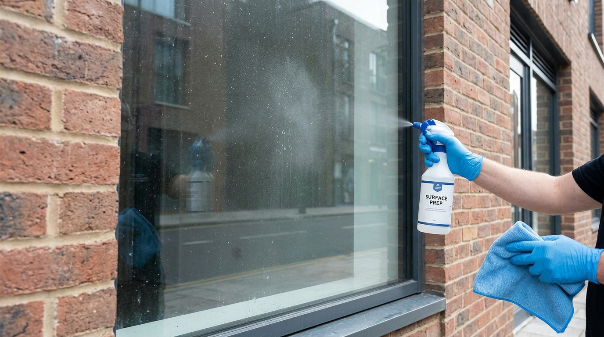
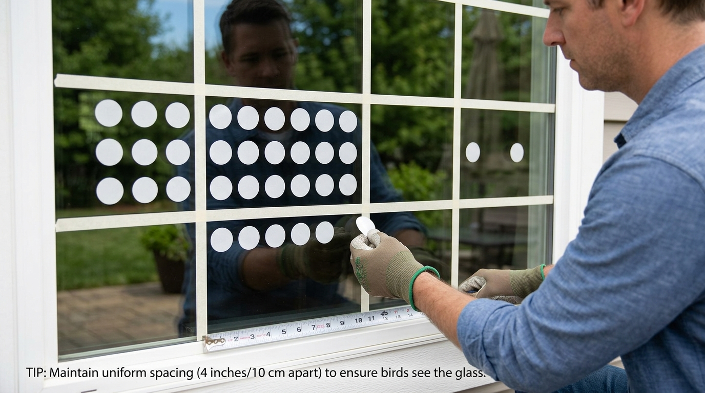
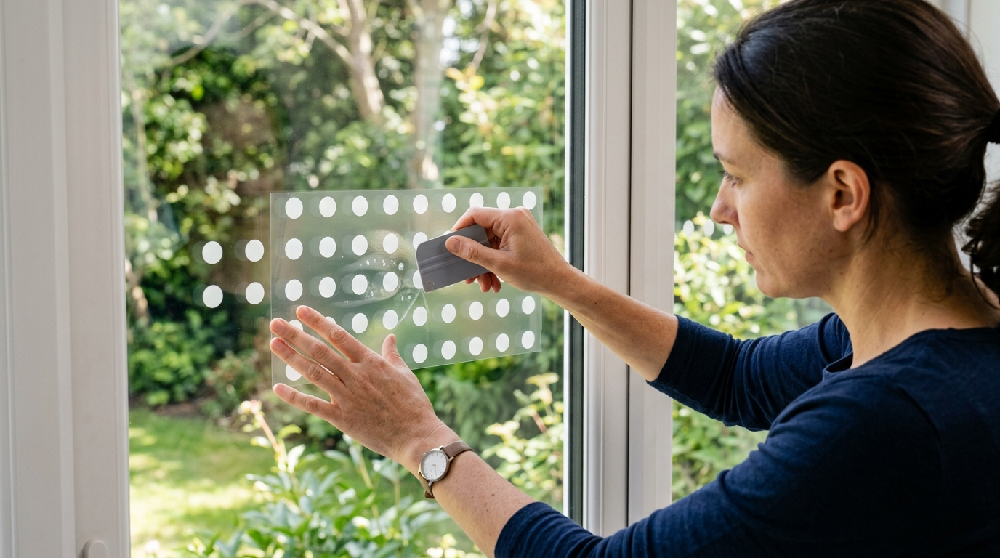

Installation Guide
단계별 스티커 부착 가이드
시작 전 확인: 스티커 부착 전 반드시 건물에 적합한 패턴과 부착 방법을 먼저 확인하세요. 잘못된 간격으로 부착하면 새가 틈새를 통과하려다 오히려 충돌 위험이 증가합니다.
1 현장 조사 및 위험 구역 파악
이른 아침(일출 후 2시간 이내) 건물 주변을 순찰하며 깃털·혈흔·기절한 새 흔적 등을 확인합니다. 충돌이 집중될 확률이 높은 면(보통 녹지·하늘 반사가 심한 면)을 우선 처리 구역으로 지정합니다.
- 충돌 이력 지점 사진 촬영 및 기록
- 건물 도면에 위험 구역 표시
- 유리 면적(㎡) 측정


2 유리 표면 청소
스티커 접착력은 표면 청결도에 달려 있습니다. 반드시 완전히 청소 후 부착하세요.
- 유리 세정제로 먼지·유분 제거
- 70% 이소프로필알코올로 2차 닦기
- 마른 극세사 천으로 완전 건조
- 기온 5℃ 이하, 강한 직사광선 환경에서는 부착 금지
3 간격 측정 및 가이드라인 표시
간격이 기준보다 넓으면 새가 그 틈새를 통과 가능한 공간으로 인식합니다. 반드시 규격을 지켜주세요.
| 패턴 | 가로 간격 | 세로 간격 |
|---|---|---|
| 도트 | 5cm 이하 | 5cm 이하 |
| 수직선 | 10cm 이하 | 해당 없음 |
| 물결 | 10cm 이하 | 5cm 이하 |
TIP: 마스킹 테이프 + 줄자로 격자 가이드라인을 표시하면 균일한 간격 유지가 쉽습니다!


4 스티커 부착 및 점검
가이드라인에 맞춰 스티커를 하나씩 부착합니다. 스크레이퍼나 신용카드로 기포를 제거하며 고정합니다.
- 모서리부터 중앙으로 눌러가며 부착
- 기포 발생 시 핀으로 터뜨려 제거 후 재부착
- 부착 완료 후 멀리 떨어져서 전체 간격 확인
- 마스킹 테이프 제거 후 최종 정렬 점검